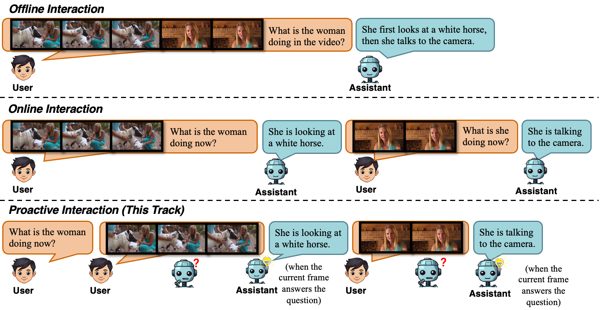

赛道 2 - ProactivEval
视觉驱动主动交互评测
本赛道旨在通过评测模型是否能够充当主动且有帮助的具身助手，来推进人工智能在视觉流中的主动感知能力。我们评估模型在多个贴近真实世界、以视觉为基础的场景中，理解上下文、预判需求，并以主动、及时且有帮助的方式支持人类的能力。
任务描述
给定一个实时播放的视频流以及在视频开头提供的问题，参赛者需要开发模型，使其能够在视频播放过程中主动决定何时回应以及回应什么，而不是在用户明确提问之后才作答。

参赛者将被邀请提交一个对话系统，其中包括多模态大模型以及相应的推理代码。系统输入将是视频开头给出的一个问题，以及视频的逐帧输入。系统应当能够在每一帧输入之后，仅基于截至当前已观察到的上下文，判断是否需要生成回复以及应当生成什么回复。在时间 t 生成回复时，严格禁止使用时间 t 之后的帧。
每个测试样例的真实答案包含一条或多条回复。每条真实答案回复都由一个时间段以及对应文本组成。
示例视频：（视频中的问题和答案以字幕形式展示。以 "[0s] user:" 开头的字幕是问题，以 "[t1-t2] assistant:" 开头的字幕是真实答案。）
评测指标
模型将从时效性、正确性和冗余度三个方面进行评测。
模型将通过两个基于大模型的指标进行评估：PAUC（取值范围为 [0, 1]，越高越好）和 duplicate（取值范围为 [0, 1]，越低越好）。PAUC 要求模型在目标时间段内尽可能早地生成内容，并且该内容在语义上尽可能接近参考文本。该指标同时衡量模型的时效性和正确性。关于 PAUC 指标的详细说明，请参考 ProactiveVideoQA arXiv paper。
duplicate 指标要求模型在同一时间段内不要生成与已有回复完全相同的内容。该指标用于衡量模型的冗余度。其定义如下：对于每一个时间段，从第二条回复开始，我们判断之后的每一条回复是否都被同一时间段内此前所有回复完全蕴含。这样的“真蕴含”情况数量与该时间段内第一条回复之后的总回复数之比，即为 duplicate 分数。数值越低表示表现越好。
上述两个指标中的文本相似度将通过大模型计算（Gemini 3.1 Flash-Lite）。
最终排名将基于两个指标的加权和：
0.9 × PAUC + 0.1 × (1 − duplicate)
数据集
阶段二测试集：
阶段一测试集：
不提供官方训练集, 参赛者可从下列主动式交互相关工作中获取训练数据：
https://github.com/showlab/videollm-online
排行榜
| 排名 | TeamID | PAUC | repetition | 总分 |
|---|---|---|---|---|
| 1 | tryanderror2 | 58.93 | 1.49 | 62.89 |
| 2 | TryTry | 61.24 | 34.46 | 61.67 |
| 3 | smalltry | 56.77 | 8.89 | 60.21 |
| (baseline) | MMDuet2 | 44.07 | 9.23 | 48.74 |
| 4 | momoEng | 42.72 | 19.51 | 46.49 |
| 5 | Lenormand | 38.92 | 11.94 | 43.84 |
公开成绩在评测流程结束后公布。当前成绩截至 2026 年 6 月 29 日 20:00 GMT+8 的提交结果。